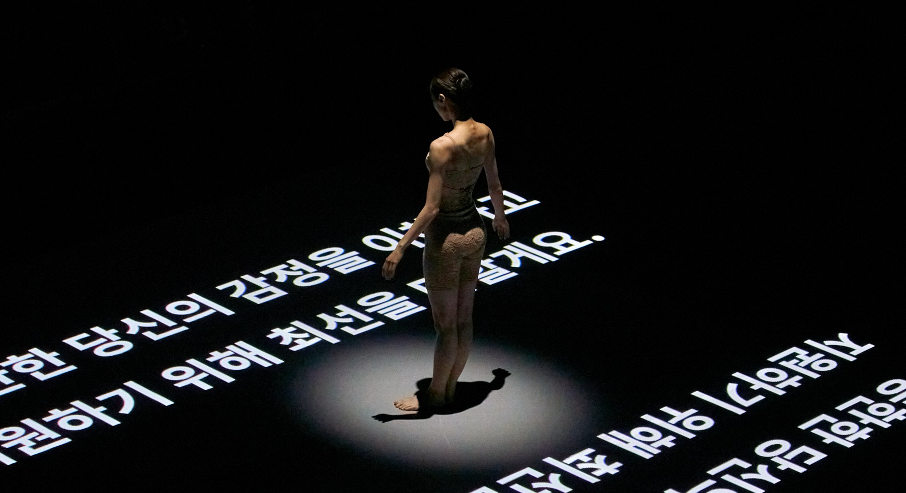
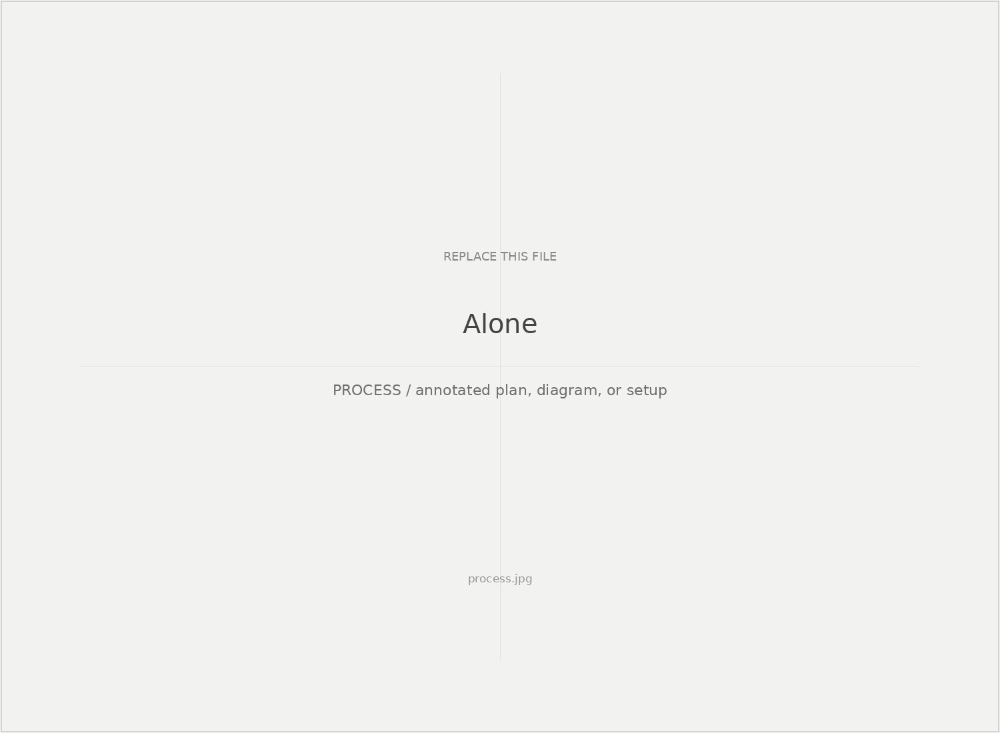
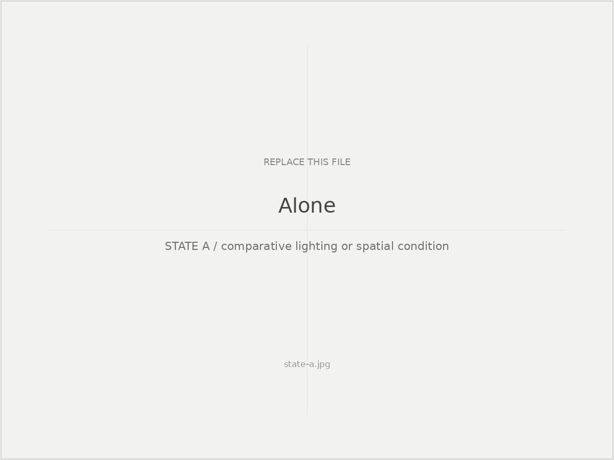
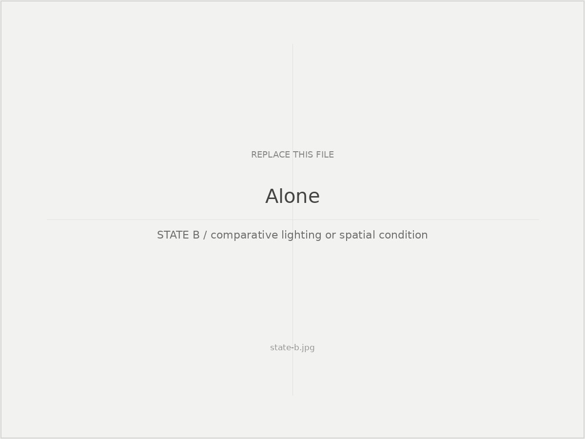
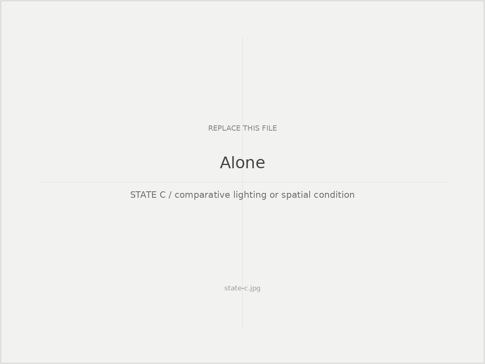
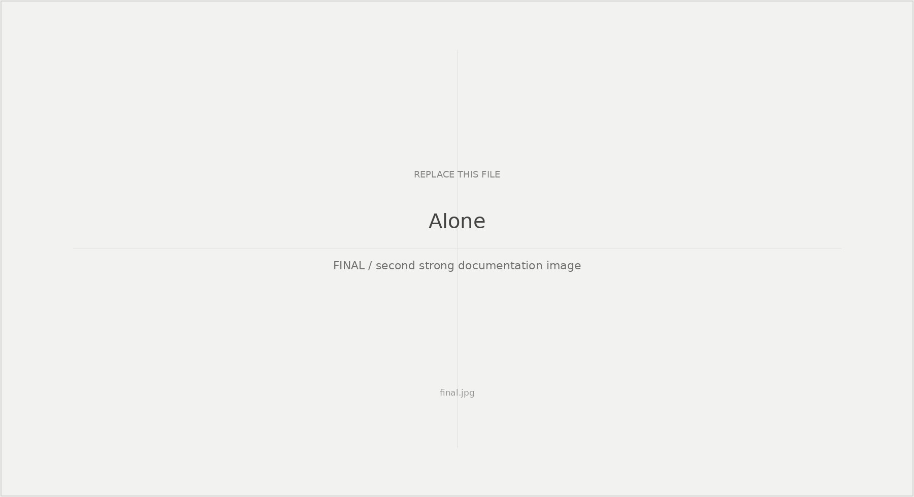

Study 06
Alone
How can lighting shift attention between the live body, AI-generated language, and the surrounding visual environment?

Study 01
Lighting as an attention system
I treated each cue as a handoff of attention: revealing the performer, allowing projected language to dominate, or letting light and projection share the visual field.

Study 02
Comparative visibility states
Rather than presenting additional production images, this comparison isolates three visual relationships to make the distribution of attention visible.

STATE A / BODY + AI-GENERATED PROJECTION + LIGHT

STATE B / BODY + LIGHT

STATE C / AI-GENERATED PROJECTION / BODY WITHHELD
Reflection
What this changed
This work shifted my interest from AI as generated material toward a question of decision authority: what changes when a computational system is allowed to affect the performance itself?

Optional final documentation image or composite.